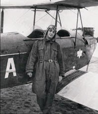
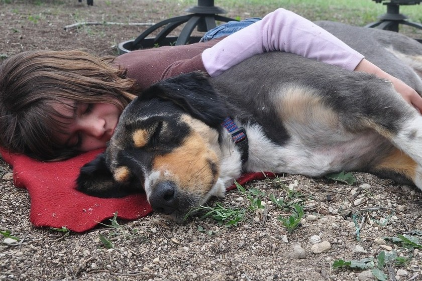
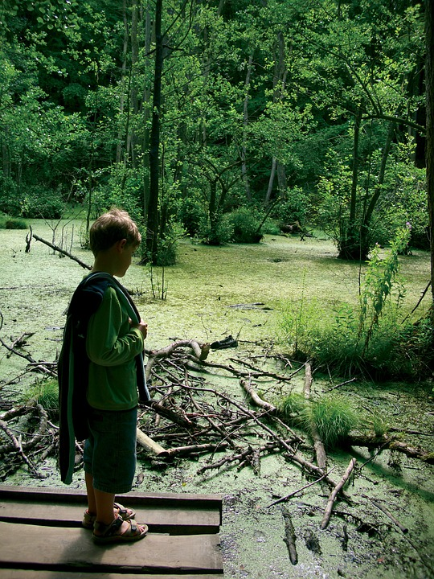

Héctor de Jesús Hernández
La vida de Hector no ha sido fácil pero a sus 72 años por fin le sonríe. El llego a un centro de atencion para adulto mayor en la comuna 13 de Medellín, él llego a este lugar sin esperanza y con un diagnostico de ceguera casi total y alli encontro el amor de su vida.
Infancia y juentud
fue un niño como todos, desde pequeño le gustaba escuchar cuentos, correr, montar a caballo, jugar con sus amigos, volar papagayo... también lloraba cuando se caía o cuando su papá no le daba lo que el quería. cuando apenas contaba con 3 años de edad, muere su padre y a los 6 meses más tarde también su madre. Fue duro para él enfrentarse al mundo solo desde una edad temprana por suerte encontro un refugio en la fuerza aerea donde encontro un proposito para su vida, alli se forjo como persona y logro tomar decisiones importantes y formar parte de logros importantes
Familia y momentos felices
Hector entrego su vida por completo al servicio de la Fuerza Area cuando ya estaba en su periodo de jubilación decidio internarce en un centro para adulto mayor ya que su avanzada edad no habia considerado la opción de formar una familia, buscando tranquilidad y un buen lugar para tener bienestar esta fue la mejor opción para él. Alli conocio a una mujer llamada Bertha Posada, desde el momento que Hector ingreso al hogar ella inmediatamente se volvio su mejor amiga y su compañera quien lo cuidaba y conquien compartian buenas historia, el amor entre ellos dos florecio juntos tomaron la decición de casarse y tener una luna de miel.¡y así fue! hicieron los arreglos y ambos llegaron vestidos para este gran día y frente a un cura dieron el sí para consolidar este amor que ahora los hace soñar en grande y que les permitirá irse de viaje a Cartagena, pues fue el regalo de bodas que les dieron.
Cilia Giraldo
Cilia a sus 65 años cumplio su promesa, después de su pension y establecerse compro un lote y lo adaptó como albergue para animalitos rescatados, Cilia con su familia han logrado resctar y conseguirles hogar a miles de perritos.
Infancia y juentud
su infancia fue tranquila y llena de amor crecio en una familia acomodada, que tenía lo suficiente y era respetada. Desde muy pequeña Cilia demostró un gran espíritu animalistas, por eso cuando se aproximaba a alguna criatura no se resistía sus ganas de mimarla. desde muy pequeña le gustaba ayudar en los refugios haciendo voluntariados que mantuvo hasta ahora al cumplir su promesa
Familia y momentos felices
A los 35 años Cilia se casó con Orlando Blades ambos eran voluntariados en el refugio chiguax cuando se conocieron, juntos tuvieron 3 hijos , en el momento en que ellos crecieron y eventualemnte dejaron el hogar. Cilia y Orlando decidieron adoptar un perro por aniversario apartir de ese momento se comprometiron juntos en trabajar enfocados para cumplir esta anhelada promesa.
Pedro Montoya
Cuando pedro cumplió 80 años celebró mediante la realización de 80 saltos en paracaídas en una fila sin interrupciones. A los 82 años pasa la mayor parte de su tiempo viajando por el mundo con su esposa. Han visitado más de 180 países.
Infancia y juentud
Pedro es el mayor de 15 hermanos, crecio y se educo en una familia humilde pero con una ambicion enorme por conocer el mundo le interesaban los deportes y la aventura, siempre trabajo en el sector turistico especialmente en deporte extremos naturales. Desde los 15 años empezo a participar en escurciones alimentando su pasión por la libertad.
Familia y momentos felices
Desde una temprana edad el padre de pedro decide llevarse a la familia a vivir a Santa Elena el corregimiento, toda su niñes la paso entre arboles jugando con sus hermanos, por sus viajes no tuvo una vida muy hogareña pero los 48 años conocio a Sandra quien a sido su compañera de aventuras juntos decidieron viajar y conocer el mundo